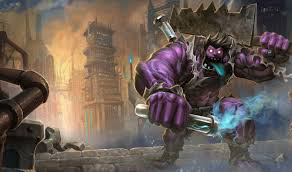

tu devrais essayer Dr. Mundo le dément de zaun

Dr mundo est un tank de mélée dont la méchanique prinipale tourne autour de la régénération passive de point de vie, il se régénère en combat autant qu'il subit de dégats ce qui le rend particulièrement résistant, de plus il inflige énormément de dégats en mélée et est très peu sensible aux contrôles ennemies, après tout "mundo va ou il veut"